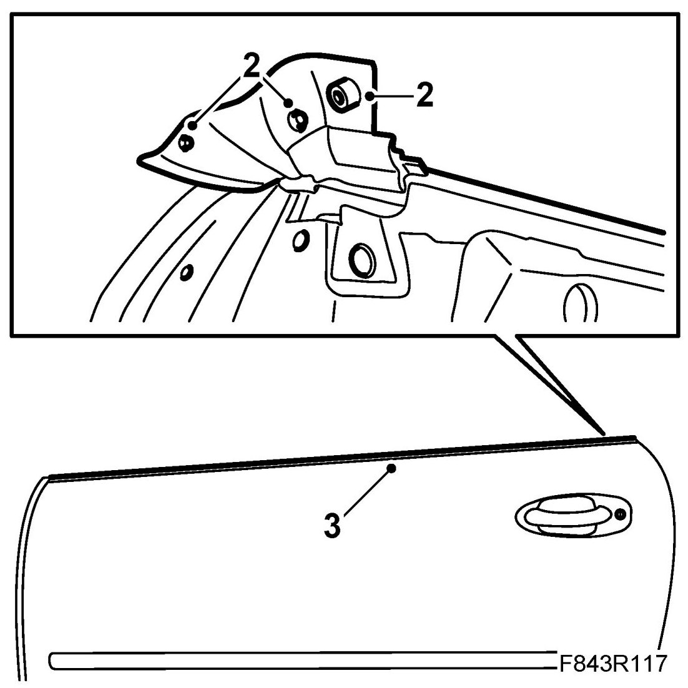
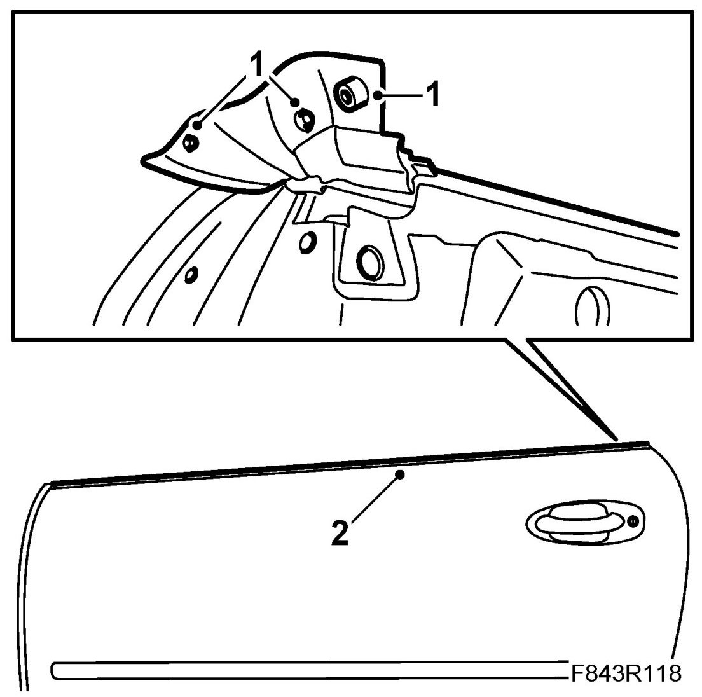

Outer Weatherstrip, CV
Outer Weatherstrip, CV
To remove
1. Remove the Door trim, CV, Door mirror, CV and Door mirror mounting with seal, CV.
2. Carefully pull out the attaching plugs from the rear section of the outer weatherstrip.

3. Lift the outer weatherstrip upwards and remove it.
To fit
1. Place the outer weatherstrip in fitting position and fasten the attaching plugs. Make sure the tab is mounted properly.

2. Fasten the rear of the weatherstrip and continue towards the front.
3. Fit the Door mirror mounting with seal, Door mirror and Door trim.